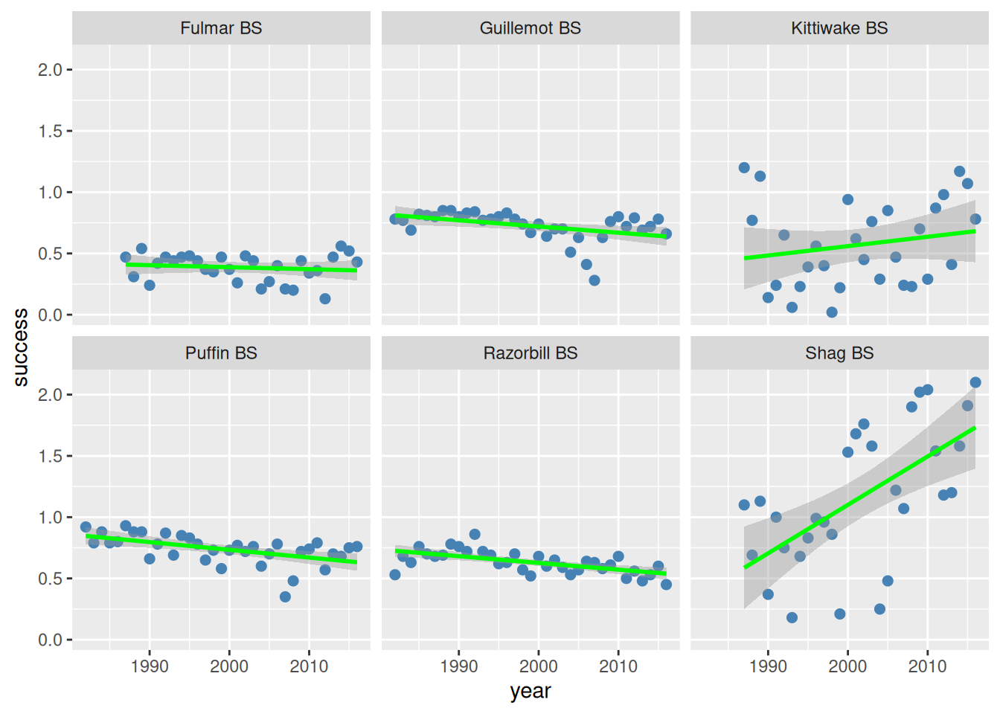
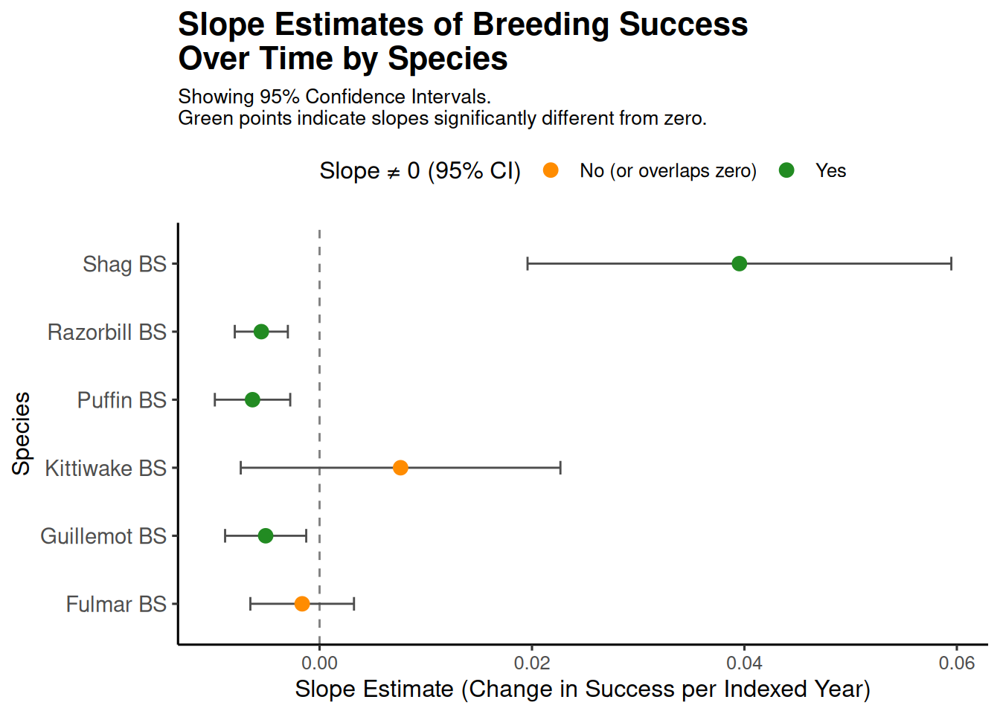
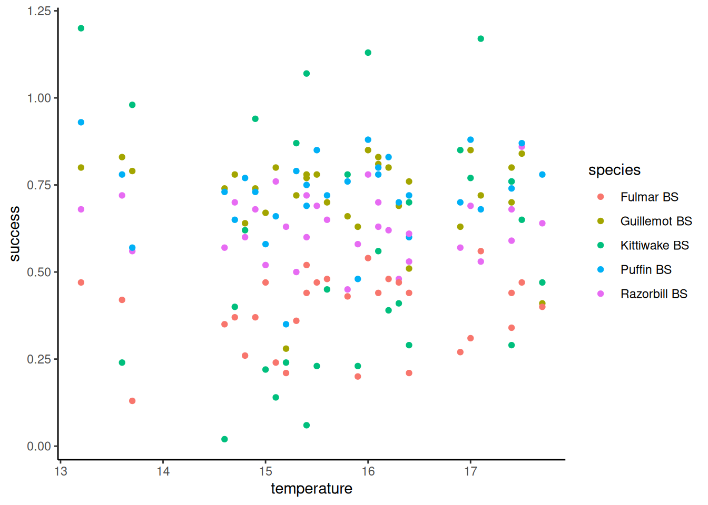
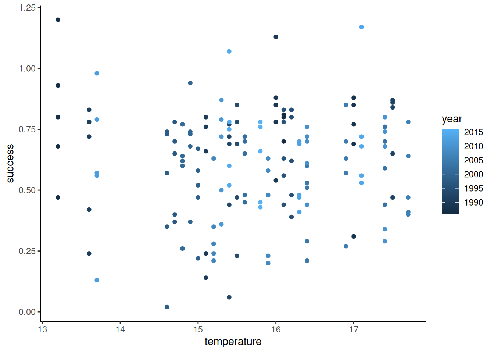
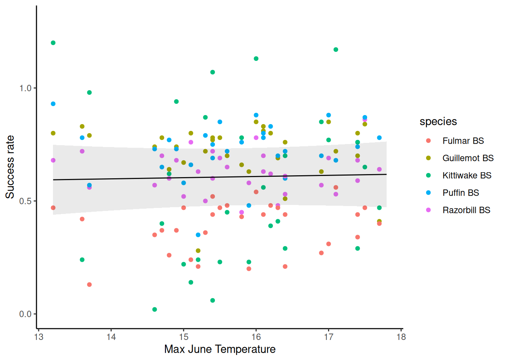
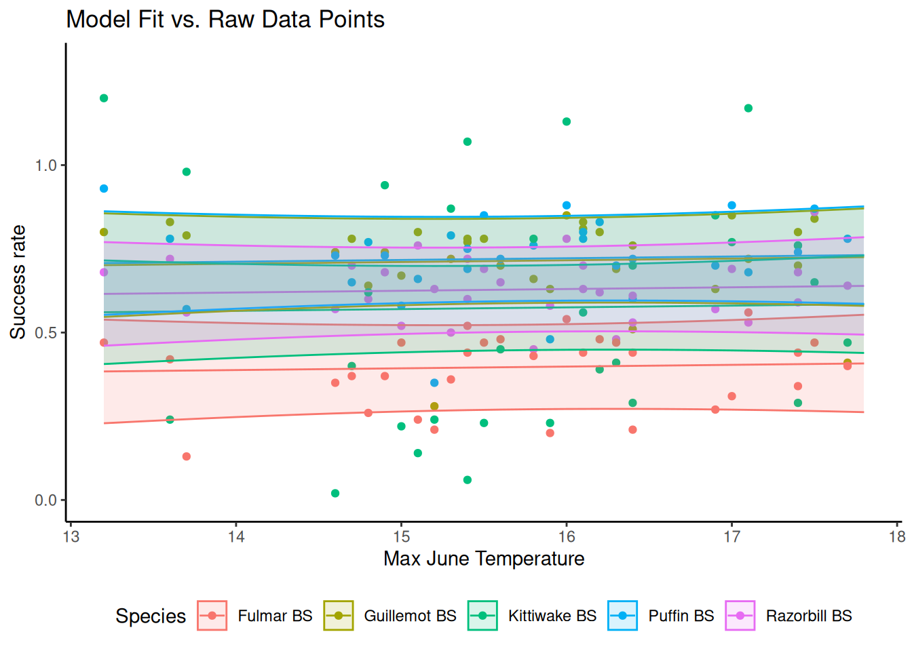
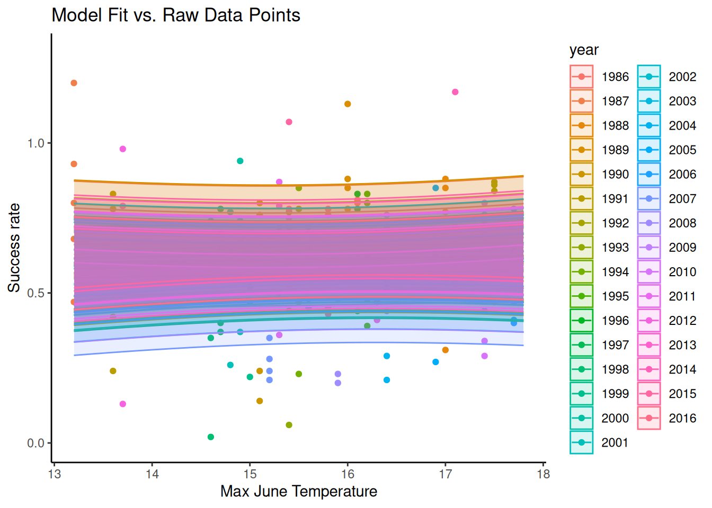
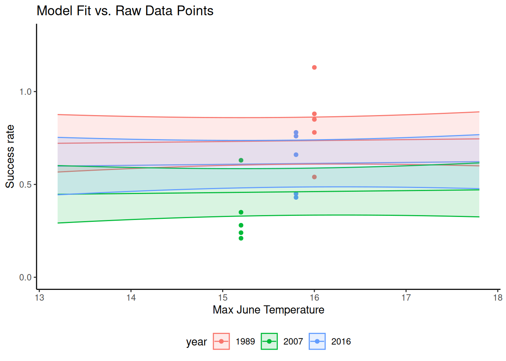

library(rio)
library(tidyverse)
library(broom)
library(lme4)
library(ggeffects)
library(sjPlot)
# Custom function
my_glimpse <- function(df, nn = 7) {
df <- df %>%
mutate(across(everything(), ~ if_else(is.character(.) & str_detect(., "^\\s*$"), NA, .)))
tibble::tibble(
Variable = names(df),
N_distinct = unname(purrr::map_int(df, dplyr::n_distinct)),
NAs = unname(purrr::map_int(df, ~ sum(is.na(.)))),
Types = unname(purrr::map_chr(df, ~ paste(class(.), collapse = ', '))),
Content = unname(purrr::map_chr(df, ~ {
vals_unique <- unique(.)
n_vals_unique <- length(vals_unique)
if (n_vals_unique == 0)
''
else if (n_vals_unique > nn)
paste(paste0(head(vals_unique, nn), collapse = ', '), ',...')
else
paste(vals_unique, collapse = ', ')
}))
)
}Mastering Modelling challenge: Seabird population dynamics
1 Purpose
My attempt at the last challenge. The wording of the tasks and question is taken from here. Any code present here is my own.
Libraries used:
2 Challenge outline and objectives
The Isle of May, located on the east coast of Scotland, is a nature reserve home to large colonies of seabirds. A long-term monitoring programme is in place, and every year, scientists and volunteers record information about the abundance, breeding success, and diet of seabirds such as puffins, fulmars, kittiwakes, shags, guillemots, and razorbills. There is concern that with changing climate, the abundance of sandeels (and the plankton upon which they depend), a favourite food resource for birds, will decrease or shift temporally so that the availability will be reduced at the critical time of breeding and chick rearing.
Your mission will be to analyse the breeding success and other behaviours of seabirds compiled and summarised by the Centre for Ecology and Hydrology to assess the health of these seabird populations. You will look for temporal trends, but also for environmental factors which may influence the breeding of the birds.
2.1 CEH’s Isle of May Long-Term Study data
Breeding success of sea birds (IMLOTSBSDataset1982-2016.csv): compiled as the number of chicks fledged per nest. Original data link here.
Dive times and depths of auks (IoM_AukDiving.csv): from the Isle of May outside the breeding season, obtained by fitting birds with data loggers. Original data link here.
2.2 Climate data from the Met Office
clim_east_Scotland.csv For the East of Scotland, extracted and compiled by us. It contains:
minimum, mean and maximum monthly temperatures (°C)
monthly sunshine (hours)
monthly rainfall (mm)
The dataset also contains seasonal averages of these variables. Winter: Dec-Feb, Spring: Mar-May, Summer: June-Aug, Autumn: Sept-Nov. (For winter, year refers to Jan/Feb). Original data link here.
3 Specific tasks
Here is a detailed list of the tasks you should achieve within this challenge. Remember that a challenge is meant to be, well, challenging, and therefore we are setting you goals but the choice of workflow and functions to achieve them is up to you! We also list the questions that will be asked in the quiz at the end to confirm your successful completion - we suggest you take note of your answers as you go.
3.1 Temporal trends in breeding success
You will import the breeding success data, and plot the time series and a line of best fit for each species. Specifically, you should:
- Reshape the data for analysis, with a “species” column.
# Load the data.
breeding_data <- import('./data/IMLOTSBSDataset1982-2016.csv') %>% as_tibble()
s_breeding_data <- my_glimpse(breeding_data)# Reshape the data.
breeding_long <- breeding_data %>%
pivot_longer(
cols = -c(year),
names_to = 'species',
values_to = 'success',
values_drop_na = TRUE
) %>%
mutate(
species = as.factor(species)
)- Create a faceted plot showing the time series and a line of best fit for each species.
# Model the data.
exploratory_plots <- breeding_long %>%
filter(str_detect(species, 'BS')) %>%
ggplot(aes(x = year, y = success))+
facet_wrap(~ species)+
geom_point(color = 'steelblue', size = 2)+
geom_smooth(method = 'lm', se = TRUE, color = 'green')
exploratory_plots`geom_smooth()` using formula = 'y ~ x'

- Run a linear regression for each species and extract slopes, confidence intervals and goodness of fit information for these models. (Look at the Help & Hints section if you cannot find a way to automate this – you should not copy and paste your code six times!).
lm_species <- breeding_long %>%
filter(str_detect(species, 'BS')) %>%
nest_by(species) %>%
mutate(
models = list(lm(success ~ I(year - min(year) + 1), data = data))
) %>%
mutate(
statistics = list(broom::tidy(models, conf.int = TRUE)),
model_info = list(broom::glance(models))
) %>%
ungroup()- Create a visualisation of your choice showing the slope estimate and confidence intervals for each species, so that is clear which slopes differ from zero.
# Plots
p_data <- lm_species %>%
select(species, statistics) %>%
unnest(statistics) %>%
filter(term == 'I(year - min(year) + 1)')
p <- p_data %>%
ggplot(aes(x = estimate, y = species))+
geom_vline(xintercept = 0, linetype = 'dashed', color = 'grey50')+
geom_errorbar(aes(xmin = conf.low, xmax = conf.high), width = 0.2, color = 'grey30')+
geom_point(aes(color = (conf.low > 0 | conf.high < 0)), size = 3)+
scale_color_manual(
values = c('TRUE' = 'forestgreen', 'FALSE' = 'darkorange'),
name = 'Slope ≠ 0 (95% CI)',
labels = c(
'TRUE' = 'Yes',
'FALSE' = 'No (or overlaps zero)'
)
)+
labs(
title = 'Slope Estimates of Breeding Success \nOver Time by Species',
subtitle = 'Showing 95% Confidence Intervals.\nGreen points indicate slopes significantly different from zero.',
x = 'Slope Estimate (Change in Success per Indexed Year)',
y = 'Species'
)+
theme_classic(base_size = 12)+
theme(
legend.position = 'top',
axis.text.y = element_text(size = 11),
plot.title = element_text(face = 'bold', size = 16),
plot.subtitle = element_text(size = 10)
)
p

3.1.1 Be prepared to answer the questions:
From looking at the plot, which species (2) seem to have the greatest inter-annual variability in breeding success?
From the plot, the species with the greatest inter-annual variability seem to be Shag and Kittiwake.
From the model, which species has/have experienced a significant increase?
Only Shag has experimented an significant increase. It is the only one that has positive slope that does not overlap zero.
From the model, Which species has/have experienced the strongest decrease?
In order, the species that have the most negative slope (strongest decrease) that do not overlap zero are: Puffin, Razorbill, and Guillemot.
For which species did you get the best goodness of fit?
Using the adjusted-\(\text{R}^2\) metric, Razorbill is the one with the highest goodness of fit (highest adjusted-\(\text{R}^2\)).
3.2 Does climate affect breeding success?
There is growing evidence that climate change affects the dynamics of seabird populations, for instance by disrupting the timing and availability of food resources such as sandeels (and the plankton upon which eels depend).
You will design a hierarchical model to test for the influence of climate on breeding success. First, you may assume that species might show similar responses and therefore want to predict seabird breeding success as a function of climate only, with other factors perhaps introducing some non-independence in the data.
Specifically, you should:
- Subset your breeding success dataset to exclude shags (if you’ve completed the first section, you probably saw that they’re not following the same trends as other species)
breeding_long2 <- breeding_long %>%
filter(species != 'Shag BS')- Design a random-intercept mixed-model approach to answer the question. Use June max temperature (when chicks hatch and are reared) as the explanatory variable – but feel free to experiment with other possibly meaningful climate variables.
# First, we need to load and combine the climate data.
climate <- import('data/clim_east_Scotland.csv')
s_climate <- my_glimpse(climate)# We then consolidate both datasets into one tibble.
climate_long <- climate %>%
pivot_longer(
cols = -c(Year, var),
names_to = 'month',
values_to = 'temperature'
) %>%
filter(
month == 'JUN',
var == 'tmax'
)
breeding_climate <- breeding_long2 %>%
left_join(climate_long, join_by(year == Year)) %>%
drop_na() %>%
filter(str_detect(species, 'BS')) %>%
mutate(year = as.factor(year)) %>%
select(year, species, success, temperature)
Note
It seems highly important that we also plot the data first so that we can tell which random effects make sense to include in the model. For instance, in Figure 3 there are clear trends by species but not so much by year. From the plots, it would make sense to just use species as the single random effects variable. However, from the working in the later questions, it seems that the tutorial expects a model with both species and year as random effects.
# We then explore the data to assess what makes sense to put into the model.
p <- ggplot(breeding_climate, aes(x = temperature, y = success, color = species))+
geom_point()+
theme_classic()
p
p <- ggplot(breeding_climate, aes(x = temperature, y = success, color = year))+
geom_point()+
theme_classic()
p


# Build the model.
lmer_species <- lmer(success ~ temperature + (1 | species) + (1 | year), data = breeding_climate)- Extract and plot the predicted values from the model using the ggeffects package, and overlay the raw data on the graph.
# --------------Fixed effects-------------
predictions <- ggpredict(lmer_species, terms = c('temperature'))
pred_plot1 <- ggplot(predictions, aes(x = x, y = predicted))+
geom_point(data = breeding_climate, aes(x = temperature, y = success, color = species))+
geom_line()+
geom_ribbon(aes(ymin = conf.low, ymax = conf.high), alpha = .1)+
scale_y_continuous(limits = c(0, 1.3))+
labs(
x = 'Max June Temperature',
y = 'Success rate'
)+
theme_classic()
pred_plot1
# --------------Random effects species-------------
predictions <- ggpredict(lmer_species, terms = c('temperature', 'species'), type = 'random')
pred_plot2 <- ggplot()+
geom_point(
data = breeding_climate,
aes(x = temperature, y = success, color = species),
)+
geom_line(
data = predictions,
aes(x = x, y = predicted, color = group)
)+
geom_ribbon(
data = predictions,
aes(x = x, ymin = conf.low, ymax = conf.high, fill = group, color = group),
alpha = .15
)+
scale_y_continuous(limits = c(0, 1.3))+
labs(
x = 'Max June Temperature',
y = 'Success rate',
title = 'Model Fit vs. Raw Data Points',
color = 'Species',
fill = 'Species'
)+
theme_classic()+
theme(
legend.position = 'bottom'
)
pred_plot2
# --------------Random effects year-------------
predictions <- ggpredict(lmer_species, terms = c('temperature', 'year'), type = 'random')
pred_plot3 <- ggplot()+
geom_point(
data = breeding_climate,
aes(x = temperature, y = success, color = factor(year))
)+
geom_line(
data = predictions,
aes(x = x, y = predicted, color = factor(group))
)+
geom_ribbon(
data = predictions,
aes(x = x, ymin = conf.low, ymax = conf.high, fill = group, color = factor(group)),
alpha = .15
)+
scale_y_continuous(limits = c(0, 1.3))+
labs(
x = 'Max June Temperature',
y = 'Success rate',
title = 'Model Fit vs. Raw Data Points',
color = 'year',
fill = 'year'
)+
theme_classic()+
theme(
legend.position = 'right'
)
pred_plot3
# --------------Random effects year selected-------------
relevant_years <- tibble(
temperature = predictions$x,
success = predictions$predicted,
year = predictions$group
) %>%
group_by(year) %>%
summarise(
mean = mean(success)
) %>%
ungroup() %>%
arrange(desc(mean))
year_max <- relevant_years %>% head(1) %>% pull(year) %>% as.character()
year_median <- relevant_years %>% slice(floor(n()/2)) %>% pull(year) %>% as.character()
year_min <- relevant_years %>% tail(1) %>% pull(year) %>% as.character()
custom_years <- c(year_max, year_median, year_min)
predictions <- ggpredict(
lmer_species,
terms = c("temperature", paste0("year [", toString(custom_years), "]")),
type = 'random' # To include the specific random effects for these years
)
years_predicted <- levels(predictions$group) %>% str_extract('^[^.]*')
map_df <- tibble(
year_base_char = years_predicted,
year_pred_label = levels(predictions$group)
)
breeding_climate_updated <- breeding_climate %>%
mutate(year_base_char = as.character(year)) %>%
left_join(map_df, by = "year_base_char") %>%
mutate(
year_c = coalesce(year_pred_label, year_base_char),
year_c = factor(year_c) # Convert the final column to a factor for ggplot
) %>%
select(-year_base_char, -year_pred_label)
pred_plot4 <- ggplot()+
geom_point(
data = breeding_climate_updated %>% filter(as.character(year) %in% years_predicted),
aes(x = temperature, y = success, color = year_c)
)+
geom_line(
data = predictions,
aes(x = x, y = predicted, color = factor(group))
)+
geom_ribbon(
data = predictions,
aes(x = x, ymin = conf.low, ymax = conf.high, fill = group, color = factor(group)),
alpha = .15
)+
scale_y_continuous(limits = c(0, 1.3))+
labs(
x = 'Max June Temperature',
y = 'Success rate',
title = 'Model Fit vs. Raw Data Points',
color = 'year',
fill = 'year'
)+
theme_classic()+
theme(
legend.position = 'bottom'
)
pred_plot4




3.2.1 Be prepared to answer the questions:
What are your random effects?
Does June temperature affect the breeding success of seabirds?
Note
Remember that we are working with summarised data rather than the raw data, which limits our modelling options. If we had access to the raw dataset, it would contain counts (integer) of actual fledglings per nest, with a row for each of the hundreds of nests surveyed. With this in mind, have a think about:
What data distribution would you use to answer the same question as above?
Since we would be dealing with count data, that calls for a poisson distribution.
What random effect structure would you choose?
I think we could consider a hierarchical structure because each bird species would have its own set of nests that contains counts of hatchlings.
Note
Note from Edwin: After taking the quizz, it seems that the correct choice is to model it with a binomial distribution.